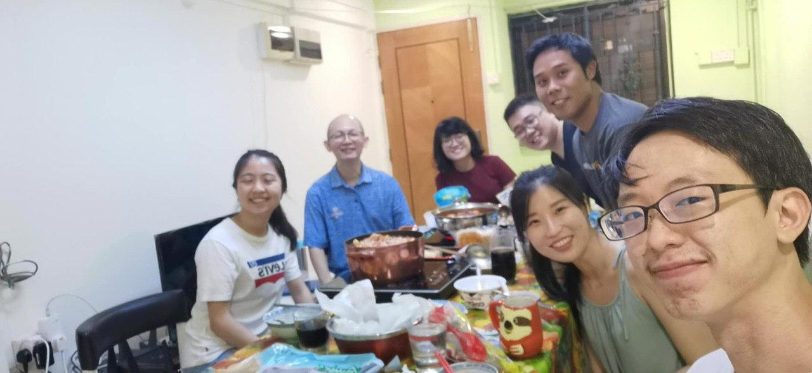

GovTech Data Science Internship Experience
7 August 2020 marks the end of my 14 weeks internship at GovTech Singapore. I am humbled to be given the opportunity to intern as a data scientist in the National Digital Identity, Enterprise Data Hub team.
During my internship duration, I was entrusted with 2 side projects and 1 main project:
1. SafeEntry Visualisations
2. Sentiment Anlaysis Model Enhancement
3. Fraud Detection Model
1. SafeEntry Visualisations
Into the first 2 weeks of my internship, I was introduced to the SafeEntry Project. Back then, SafeEntry was still relatively new and many people did not know much about it. Hence, I was tasked to perform visualisations to gain insights into the usage patterns of safe entry, as well as the adoption rates for essential and non-essential services. As I recently took up a course on tableau, it is exciting to apply this skill to a real-life project. I also tried doing up a mini dashboard for it. After presenting my visualisations and findings to Shao Quan and Judi, I was introduced to some of the challenges they were currently facing, and I was tasked to brainstorm on how we can further fine-tune the data to get more insights. There was also the implementation issue, on how safe entry can be adopted and measured in public spaces such as Parks and Malls.
2. Sentiment Anlaysis Model Enhancement
After the Safe Entry Project, I was given a new project that lasted for around 2 weeks. I had to take a look at the current text analysis code, and think of ways on how I can enhance the current sentiment analysis model of the SPIS data. For this project, I added 2 new lexicons - a form of dictionary, on top of the current AFINN, to give a better accuracy of the sentiments of the reviews. For this project, I learnt a few concepts, mainly the 3 lexicons - Vader, TextBlob and Afinn, and understand the math behind it. I also tried out emotion analysis using IBM Watson tone analyzer, and lastly I was also introduced to the concept of ensemble learning. I really appreciate SQ’s effort to explain ensemble learning to me on the day when I’m back in office.
3. Fraud Detection Model
Once circuit breaker is over, I had to go back to office to get the data and that’s when I can start working on my main project, which is to build a fraud detection model to derive a risk scoring for each company.
Prior to this project, SQ gave me the Unicorn Project codes done by the previous intern. That served as an introduction on the scale of the project that I was about to expect, and how big the datasets were.
I will give a high level overview of my model’s methodology. As for all data science projects, data preprocessing is a very crucial step and cannot be avoided. I took a fair bit of time trying to understand the data that I have and referred to the EDH dictionary. I had to also understand the problem statement to get to know what kind of data would be relevant for the analysis. With that, I retrieved the columns based on my own judgment and processed the data by combining different data frames together and dropping rows.
Once preprocessing is done, I performed DBSCAN - a form of clustering, for each industry, to cluster the data into different segments. Before using DBSCAN, I also tried out other fraud detection models such as Self Organising Maps and K-means clustering.
Once clustering is done, I assigned the data a score based on the cluster output, and trained my regression model to predict the fraud score. I also proceed to evaluate the accuracy of my regression equation. Aside from the regression model, I also attempted using decision tree, but the output wasn’t very good.
Throughout this project, I’ve iterated through this process multiple times, when I’m at the regression model, I would go back to clustering or data preprocessing steps to better improve my model.
Once my model is finalised, I proceed to create a function that can calculate the fraud score for any given data.
Takeaways
For this project, I have a couple of takeaways.
Firstly, for any given data science project, there will definitely be differing outputs. Everyone has a different interpretation of what data is relevant for a problem statement, and what kind of Machine Learning models they can use. Hence, it really depends on one’s own judgment to decide on the columns that are needed, as long as you are able to justify it.
Secondly, data understanding and preprocessing steps are no doubt very important. It is crucial for us to know what data we’re working with and process it to fit the context.
Next, it is also important to understand the business context. Given that it was my first time working with a problem relating to suspicious companies, I am initially unsure of what data is needed for the analysis. I thus read up articles and watch some videos to get to know more about the context, and hence decide on which columns to use.
Overall Reflections
I will share my overall reflections for this internship.
Firstly, my internship was a WFH experience. I was bummed that I could not get to experience working in an office like and have the ‘full’ experience after Circuit Breaker. However, I was also able to work at the comfort of my own home and not have to travel. This internship taught me to be very independent as I was given less guidance compared to face to face interactions. I had to google a lot of things and explore on my own. I have to also be disciplined and draw the line between work and rest time.
Secondly, I got to know that the field of data science is very vast. There’s a lot of concepts out there, hence it is very important to always have the mindset of continuous learning and grasp new concepts in this career.
Thirdly, communication is also very important. Being a more technical person, it is crucial to be able to convey messages from a non-technical point of view. Ultimately, what we are doing is to help the business.
Lastly, I enjoyed my experience working at GovTech, seeing the projects that the other interns and I have done, it is no doubt very meaningful as the projects in one way or another will contribute to Singapore's move to become a smarter nation.

Here’s a picture of my team's dinner, missing Evelyn. I would like to thank my team for being so encouraging and supportive throughout my internship period, and for giving me numerous advice on career development. To my direct supervisors Judi and Shao Quan, I would especially like to thank them for taking time out of their busy schedules to guide me in my projects and sharing with me all the insightful knowledge. Lastly, I would like to thank my HR in-charge, Cherine, for being so helpful throughout my internship experience, and making all the admin matters very seamless :)
Summer'20 was definitely well spent, and I am very thankful for all the opportunities that I was given :")